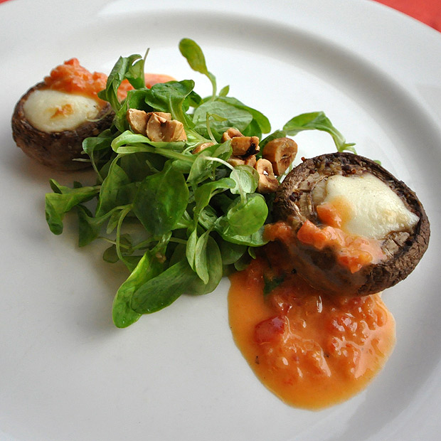

Mache Salad with Toasted Hazelnuts and a Citrus Dressing

Main Dish
Mache greens, fresh
6 ounces Hazelnuts
16 ounces Citrus dressing
1 cup Canola and olive oil blend
¼ cup Sherry vinegar
¼ cup Orange concentrate
2 each Oranges, zest and juice
1 each Lemon, zest and juice
1 tablespoon Sugar
Salt, To taste
White pepper, freshly ground, To taste
Notes
Serving Size
Small Bunch
Yield
20 servings
Ingredients
Dressing
Preparation
- Gather all the ingredients and equipment.
- Lightly toast the hazelnuts and crush with a chef’s knife or the back of a pan.
- Zest the oranges and the lemons. Blanch the zest in boiling water for a more delicate flavor.
- Juice the oranges and the lemons, or cut into segments and remove seeds.
- Combine oil, vinegar, citrus juices, orange concentrate, sugar, salt and pepper.
- Just before serving, pick the mache leaf clusters from the roots. In a small bowl with a few hazelnuts and enough dressing to moisten the leaves, turn the mache gently to coat, maintaining shape and structure.
- Arrange on plate. Garnish with additional hazelnuts.
Chef's Note
As much as possible, salad greens should be dressed à la minute.
This is especially true with delicate lettuces and herbs.
Geographic Region
United States